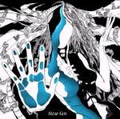

| Artist: | Spaced Out |
| Title: | Slow Gin |
| Label: | Unicorn Records UNCR 5006 |
| Length(s): | 50 minutes |
| Year(s) of release: | 2003 |
| Month of review: | [06/2003] |
| 1) | Introx | 1.05 |
| 2) | Slow Gin | 8.10 |
| 3) | Spaced In | 6.49 |
| 4) | Minor Blast | 6.09 |
| 5) | The Thing | 5.36 |
| 6) | E.M.O. | 5.29 |
| 7) | Bright Space | 6.43 |
| 8) | Glassosphere - Part III | 2.41 |
| 9) | Blue Ron Pipe A.M. | 4.26 |
| 10) | Blue Ron Pipe P.M. | 3.19 |
With Spaced In we hope for a little reprieve after our heady adventure. Dark synth somberings open on this one, and again the guitars are heavy rhythm ones, but this time used more intermittently. It seems as if the track is trying to shift into the right gear. Then the songs becomes more playful and jazzy with piano and lots of bass of course. The fuzz guitar figures as well, but more in the back, the piano is more up front.
Minor Blast opens like just that, a minor blast. But actually it gets to be quite jazzy with those fast bass runs running throughout. One is easily tempted to think of King Crimson here, there is a similarity in sound, although the bass has more focus here. The drumming is varied, but the main part of the song is a bit meandering and lacks in power. Towards the end it is quite repetitive.
On The Thing we open quite moodily, and a bit spookily. The guitar theme is very melodic and even a bit mellow. However, I do not mind at this point. The song is also somewhat dreamy. Later on the guitar becomes quite a bit sharper.
Time for a more funky approach on E.M.O., although the organ gives the song a more homely feel. The bass rocks a bit more on this one, later the guitar inserts some more spaceous and ethereal lines. We end with filmic keyboards.
On Bright Space the melodic element is very strong and very good too. The opening is more in the line of the great soundtracks and electronic musicians. The guitar plays no role whatsoever on the first part of this friendly filmic track. The piano does figure a lot running alongside the melodic keyboards. Past halfway the guitar comes in too, for some more rowdiness. But it never gets really heavy. A bit of Philip Glass in here as well, no that I think of it. Not in the guitars though.
Glassosphere - Part III is a continuation of the previous albums. A very rhythmic instrumental, fast, concise with some dissonance for spice. Vital and tension rich jazzrock.
We close with the two-parted Blue Ron Pipe. The first of the parts is Blue Ron Pipe A.M. Running water and various sound effects play a role in its opening. Shards of sax are played and supported by accidental piano. The music is building up slowly but stays rather improvised and occasional. After three minutes or so the music winds a bit, but the sax comes back in. More experimental than the previous tracks.
Blue Ron Pipe P.M. is the Crimsonesque second part in which Frippian soundscapes back busy drums, screaming guitars and weird soundeffects. A fitting and scary conclusion.